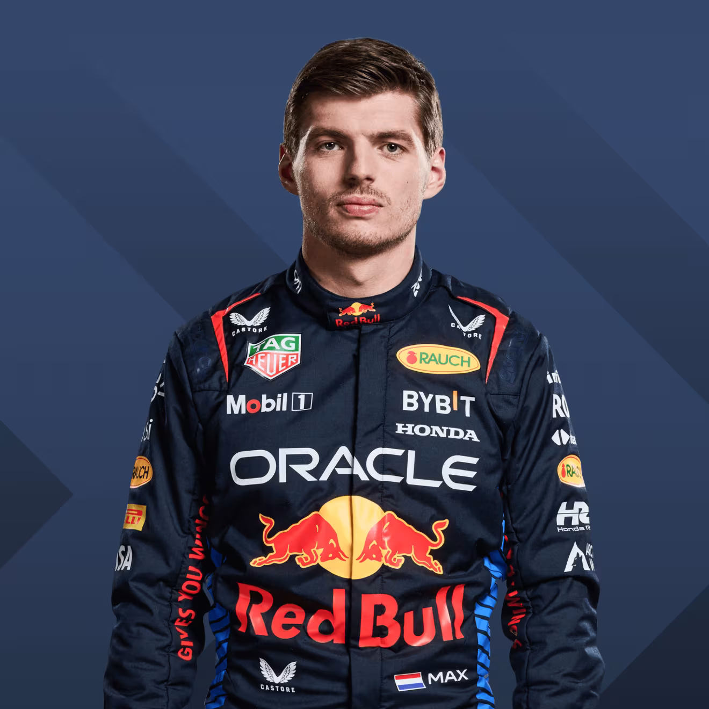

Về F1 và Max Verstappẹn
Công thức 1 còn gọi là Thể thức 1 hay F1, là một môn thể thao tốc độ chuyên về đua xe hơi bánh hở cao nhất theo định nghĩa của Liên đoàn Ô tô Quốc tế. Max Verstappen là một tay đua có lần thi đấu đầu tiên vào năm 2014, cũng là người đang giữ kỷ lục tay đua trẻ nhất được đua Gran Prix. Anh thi đấu cho Toro Rosso từ năm 2015 đến 2016 và sau đó chuyển sang RBR. Đây là nơi mà anh đã giành 4 Driver Championship liên tiếp vào các năm 2021, 2022, 2023, 2024.